Exercice 1: Pendule simple
Exercice 2: Comparaison des schémas d’Euler explicite et implicite
Exercice 3: Atterrissage d'un vaisseau spatial
On considère un pendule simple de masse \( m =1 \ kg \) , de longueur \( l=1 \ m \) qui va osciller d’arrière en avant à cause du champ de gravité de la Terre \( g = 9.8 \ m/s^2 \).
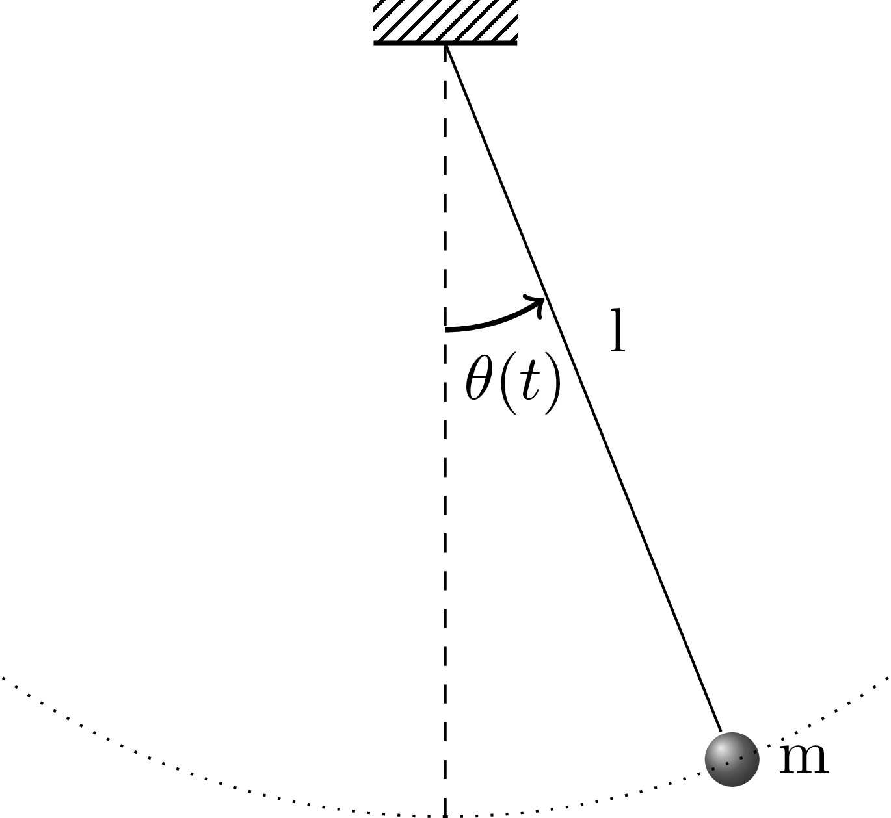
Le pendule a l'équation du mouvement : $$ \begin{align} \ddot{\theta} &= - \frac{g}{l} sin(\theta) \label{_auto1} \end{align} $$ Pour les petites amplitudes d'oscillation, \( \theta \ll 1 \), on peut faire l'approximation \( sin(\theta) \approx \theta \), on retrouve alors l’équation différentielle d’un oscillateur harmonique: $$ \begin{align} \label{eq:eqdiff} \ddot{\theta} &= - \frac{g}{l} \theta \end{align} $$
La solution exacte de cette équation est simplement: $$ \begin{align} \label{eq:solexacte} \theta (t) &= \theta_0 \ cos(\omega_0 t) \end{align} $$ où \( \omega_0 = \sqrt{g/l} \) et nous avons supposé que le pendule partait du repos avec un déplacement initial \( \theta_0 =0.2 \ rad \).
Nous allons transformer l'équation différentielle d’ordre 2 (Eq. \eqref{eq:eqdiff}) en deux équations différentielles d’ordre 1 afin de pouvoir utiliser simplement la méthode d’Euler. En posant \( \omega (t)= \dot{\theta}(t) \) la vitesse angulaire du pendule, on obtient le système de deux fonctions inconnues suivant : $$ \begin{align} \dot{\theta} (t) &= \omega (t) \label{_auto2}\\ \dot{\omega }(t) &= - \omega_0^2 \ \theta (t) \label{_auto3} \end{align} $$ Pour résoudre ce système nous devons connaître les deux conditions initiales suivantes : $$ \begin{align*} \theta(0) &= \theta_0 \\ \omega (0) &= 0 \end{align*} $$
a)
Définir une fonction sol_exacte(t) qui renvoie la solution exacte de l'oscillateur harmonique donnée par l'équation \eqref{eq:solexacte}. Tracer cette solution pour \( t \in [0,10] \) et pour un pas de \( \Delta t = 0.01 \) s.
numpy.arange() pour créer le vecteur temps t.matplotlib.pyplot.plot() pour tracer sol_exacte(t).
Le programme Python qui renvoie et trace la solution exacte de l'oscillateur harmonique est le suivant:
import numpy as np
import matplotlib.pyplot as plt
# SYSTÈME: PENDULE SIMPLE
g = 9.8 # accélération de pesanteur [m/s^2]
l = 1 # longeur du pendule [m]
dt = 0.01 # pas du temps [s]
Tf = 10 # temps finale de la simulation [s]
theta0 = 0.2 # angle initiale [rad]
omega0 = np.sqrt(g/l)
# SOLUTION EXACTE
def pendule_exacte(t):
return theta0 * np.cos(omega0 * t)
t = np.arange(0, Tf, dt)
plt.plot(t, pendule_exacte(t), linewidth=2, label="sol exacte")
plt.legend()
plt.ylabel("Amplitude d'oscillation [rad]")
plt.xlabel("Temps [s]")
plt.title("Oscillateur Harmonique")
plt.show()
L'exécution de ce programme donne la figure suivante:
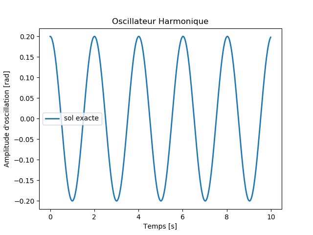
b) Rappeler l'expression de la méthode d'Euler explicite pour ce système.
Où \( \pmb{u}_k= \left(\begin{array}{c} \theta_k \\ \omega_k \end{array}\right) \), \( \pmb{A}= \left(\begin{array}{ll} 0&1 \\ - g/l& 0 \end{array}\right) \) et \( \pmb{I} \) est la matrice identité.
c) Calculer \( \pmb{u}= \left(\begin{array}{c} \theta (t) \\ \omega (t) \end{array}\right) \) avec la méthode d'Euler explicite pour \( t \in [0, 10] \) et pour un pas d’intégration \( \Delta t = 0.01 \) s.
Tracer:
On vous donne les instructions nécessaires pour reproduire un graphique en 3D:
from mpl_toolkits.mplot3d.axes3d import Axes3D
plt.figure()
ax = plt.axes(projection="3d")
ax.plot(....)
#%% EULER EXPLICITE
A = np.array([[0, 1], [- omega0**2, 0]])
nsteps = int(Tf/dt)
# CONDITIONS INITIALES: à t = 0; theta = theta0, omega = 0
u0 = np.array([theta0, 0])
Texp = np.zeros(nsteps)
Uexp = np.zeros((2, nsteps))
Texp[0] = 0.0
Uexp[:,0] = u0
# ITÉRATION
for k in range(nsteps-1):
Texp[k+1] = Texp[k] + dt
Uexp[:,k+1] = np.dot((np.eye(2) + dt * A), Uexp[:,k])
plt.figure(figsize=(10,5))
# PLOT POSITION vs TEMPS
plt.subplot(1,2,1)
plt.plot(Texp,Uexp[0,:], linewidth=2)
plt.xlabel("Temps [s]")
plt.ylabel("Amplitude d'oscillation [rad]")
plt.title("Oscillateur Harmonique (Euler explicite)")
# DIAGRAMME DE PHASE 2D
plt.subplot(1,2,2)
plt.plot(Uexp[0,:],Uexp[1,:], linewidth=2)
plt.xlabel("Amplitude d'oscillation [rad]")
plt.ylabel("Vitesse angulaire [rad/s]")
plt.title("Espace des phases (Euler explicite)")
plt.savefig("Pendule_EulerExp1D.png"); plt.savefig("Pendule_EulerExp1D.pdf")
# DIAGRAMME DE PHASE 3D
from mpl_toolkits.mplot3d.axes3d import Axes3D
plt.figure()
ax = plt.axes(projection="3d")
ax.plot(Texp, Uexp[0,:],Uexp[1,:], linewidth=2)
ax.set_xlabel("Temps [s]")
ax.set_ylabel("Amplitude d'oscillation [rad]")
ax.set_zlabel("Vitesse angulaire [rad/s]")
ax.set_title("Espace des phases (Euler explicite)")
plt.show()
L'exécution de ce programme donne les figures suivantes:
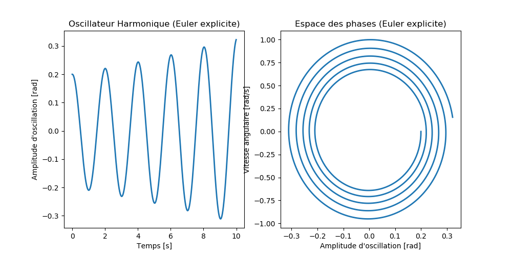
et la figure en 3D:
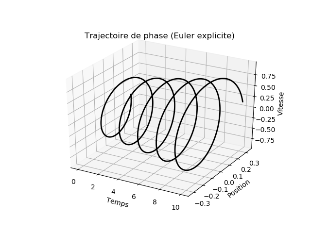
d) Rappeler l'expression de la méthode d'Euler implicite pour ce système.
Où \( \pmb{u}_k= \left(\begin{array}{c} \theta_k \\ \omega_k \end{array}\right) \), \( \pmb{A}= \left(\begin{array}{ll} 0&1 \\ - g/l& 0 \end{array}\right) \) et \( \pmb{I} \) est la matrice identité.
e) Calculer \( \pmb{u}= \left(\begin{array}{c} \theta (t) \\ \omega (t) \end{array}\right) \) avec la méthode d'Euler implicite pour \( t \in [0, 10] \) et pour un pas d'integration \( \Delta t = 0.01 \) s.
Tracer:
#%% EULER IMPLICITE
from numpy.linalg import inv
Timp = np.zeros(nsteps)
Uimp = np.zeros((2, nsteps))
Timp[0] = 0.0
Uimp[:,0] = u0
# ITÉRATION
for k in range(nsteps-1):
Timp[k+1] = Timp[k] + dt
Uimp[:,k+1] = np.dot(inv(np.eye(2) - dt * A), Uimp[:,k])
plt.figure(figsize=(10,5))
# PLOT POSITION vs TEMPS
plt.subplot(1,2,1)
plt.plot(Timp,Uimp[0,:], linewidth=2)
plt.xlabel("Temps [s]")
plt.ylabel("Amplitude d'oscillation [rad]")
plt.title("Oscillateur Harmonique (Euler implicite)")
# DIAGRAMME DE PHASE
plt.subplot(1,2,2)
plt.plot(Uimp[0,:],Uimp[1,:], linewidth=2)
plt.xlabel("Amplitude d'oscillation [rad]")
plt.ylabel("Vitesse angulaire [rad/s]")
plt.title("Espace des phases (Euler implicite)")
plt.savefig("Pendule_Eulerimp1D.png"); plt.savefig("Pendule_Eulerimp1D.pdf")
plt.show()
# DIAGRAMME DE PHASE 3D
plt.figure()
ax = plt.axes(projection="3d")
ax.plot(Timp, Uimp[0,:],Uimp[1,:], linewidth=2)
ax.set_xlabel("Temps [s]")
ax.set_ylabel("Amplitude d'oscillation [rad]")
ax.set_zlabel("Vitesse angulaire [rad/s]")
ax.set_title("Espace des phases (Euler implicite)")
plt.savefig("Pendule_Eulerimp3D.png"); plt.savefig("Pendule_Eulerimp3D.pdf")
plt.show()
L'exécution de ce programme donne les figures suivantes:
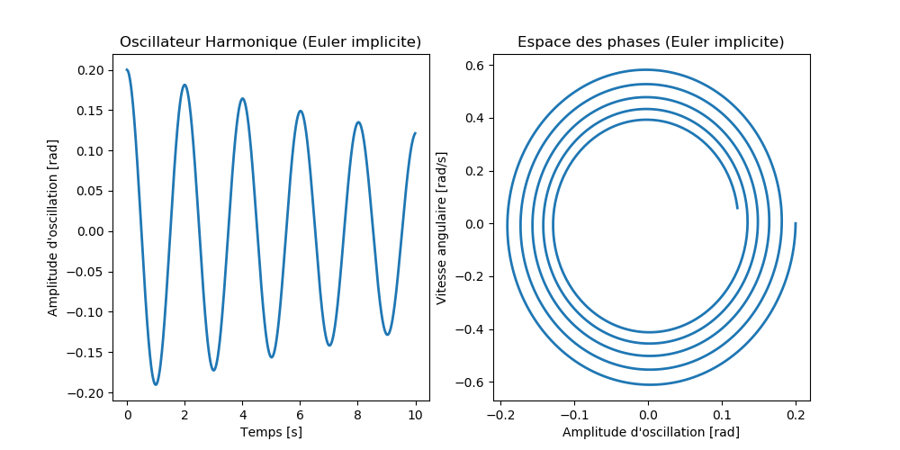
et la figure en 3D:
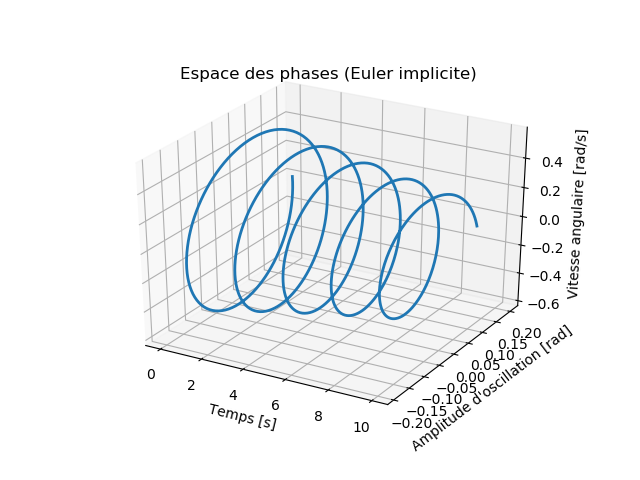
f) Tracer dans un même graphique pour \( t \in [0, 10] \) et avec un pas \( \Delta t = 0.01 \) s:
sol_exacte(t) calculée dans a).
#%% ILLUSTRATION
plt.figure()
plt.plot(t, pendule_exacte(t), linewidth=2, label="sol exact")
plt.plot(t, Uexp[0,:], linewidth=2, linestyle='--', label="Euler explicite")
plt.plot(t, Uimp[0,:], linewidth=2, linestyle='--', label="Euler implicite")
plt.legend()
plt.xlabel("Temps [s]")
plt.ylabel("Amplitude d'oscillation [rad]")
plt.title("Oscillateur Harmonique avec "+ r"$\Delta t =$"+str(dt))
plt.savefig("Pendule_illustration.png"); plt.savefig("Pendule_illustration.pdf")
plt.show()
Pour \( \Delta t = 0.01 \), l'exécution du code donne la figure suivante:
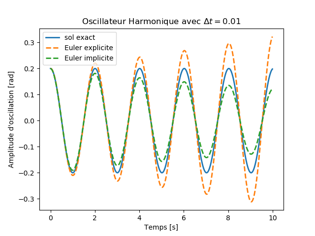
Pour \( \Delta t = 0.001 \), l'exécution du code donne la figure suivante:
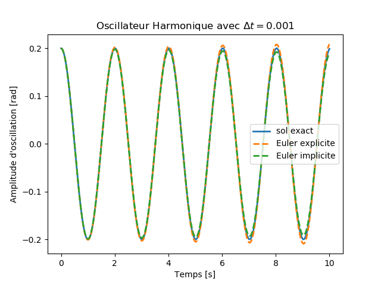
Plus la simulation est longue, plus \( \Delta t \) doit être petit.
On considère le problème de Cauchy: $$ \begin{align} \label{eq:equdiffEx2} \frac{d z(t)}{dt} = 1 - \frac{t}{\mu}, \ t \in \Re, \ z(0) = z_0 \end{align} $$ On rappelle que la solution exacte de ce problème est donnée par: $$ \begin{align} \label{eq:solexacte2} z(t) = \mu -(\mu - z_0) e^{-\frac{t}{\mu}} \end{align} $$
a)
Définir une fonction sol_exacte(t, mu, z0) qui renvoie la solution exacte donnée par l'équation \eqref{eq:solexacte2}. Tracer sur un même graphique pour \( \mu= 1 \) et \( z_0 \in \{0, 1, 2\} \) ces solutions. Soit \( t \in [0,2] \) et pour un pas de \( \Delta t = 0.1 \) s.
#Question-a) dans le code Python à la fin de l'exercice.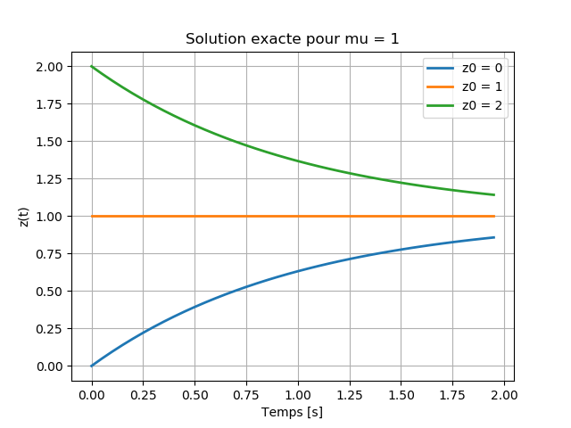
b) Même questions pour \( \mu= 0.05 \) et \( z_0 \in \{0, 1, 2\} \).
#Question-b) dans le code Python à la fin de l'exercice.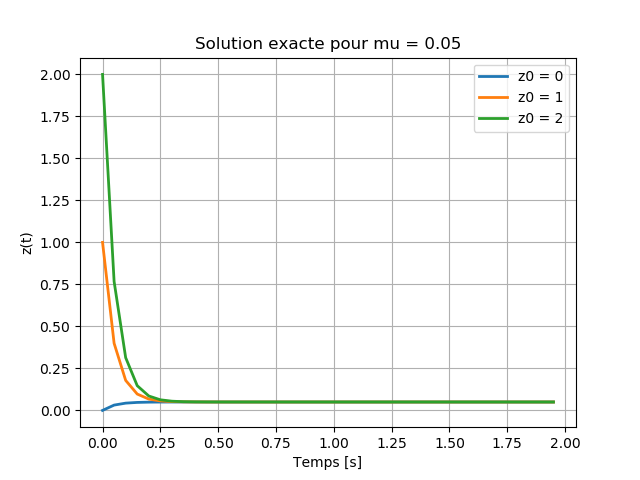
On suppose dans cette question que \( \mu= 0.05 \) et que \( z_0 = 2 \). c) Rappeler l'expression de la méthode d'Euler explicite pour ce problème. Calculer \( z(t) \) avec la méthode d’Euler explicite pour \( t \in [0, 2] \) et pour un pas d’intégration \( \Delta t = 0.1 \) s.
L'expression de la méthode d'Euler explicite sous sa forme scalaire s'écrit: $$\frac{z_{n+1} - z_n}{\Delta t} = \dot{z_n} = f(z_n)$$ Or d'après l'équation \eqref{eq:equdiffEx2} nous avons \( f(z_n) = 1 - \frac{z_n}{\mu} \), d'où le schémas explicite d'Euler: $$z_{n+1} = z_n + \Delta t (1 - \frac{z_n}{\mu}) , \ n = 0, 1, 2, ..., N-1.$$
#Question-c) - EULER EXPLICITE dans le code Python à la fin de l'exercice.
d) Montrer que l'expression de la méthode d'Euler implicite est: $$z_{n+1} = \frac{z_n + \Delta t}{1 + \frac{\Delta t}{\mu}}, \ n = 0, 1, 2, ..., N-1.$$ Calculer \( z(t) \) avec la méthode d'Euler implicite pour \( t \in [0, 2] \) et pour un pas d’intégration \( \Delta t = 0.1 \) s.
L'expression de la méthode d'Euler implicite sous sa forme scalaire s'écrit: $$\frac{z_{n+1} - z_n}{\Delta t} = \dot{z_n} = f(z_{n+1})$$ Or d'après l'équation \eqref{eq:equdiffEx2} nous avons \( f(z_{n+1}) = 1 - \frac{z_{n+1}}{\mu} \), par la suite : $$z_{n+1} = z_n + \Delta t (1 - \frac{z_{n+1}}{\mu})$$ d'où le schémas implicite d'Euler: $$z_{n+1} = \frac{z_n + \Delta t}{1 + \frac{\Delta t}{\mu}}, \ n = 0, 1, 2, ..., N-1.$$
#Question-d) - EULER IMPLICITE dans le code Python à la fin de l'exercice.
e) Tracer dans un même graphique pour \( t \in [0, 2] \) et avec des pas d'intégration \( \Delta t = 0.5, 0.1, 0.05, 0.01, 0.005 \) s:
sol_exacte(t, 0.05, 2)
La figure ci-dessous illustre l'importance du choix du pas d'intégration \( \Delta t \) pour obtenir une bonne approximation de la solution exacte.
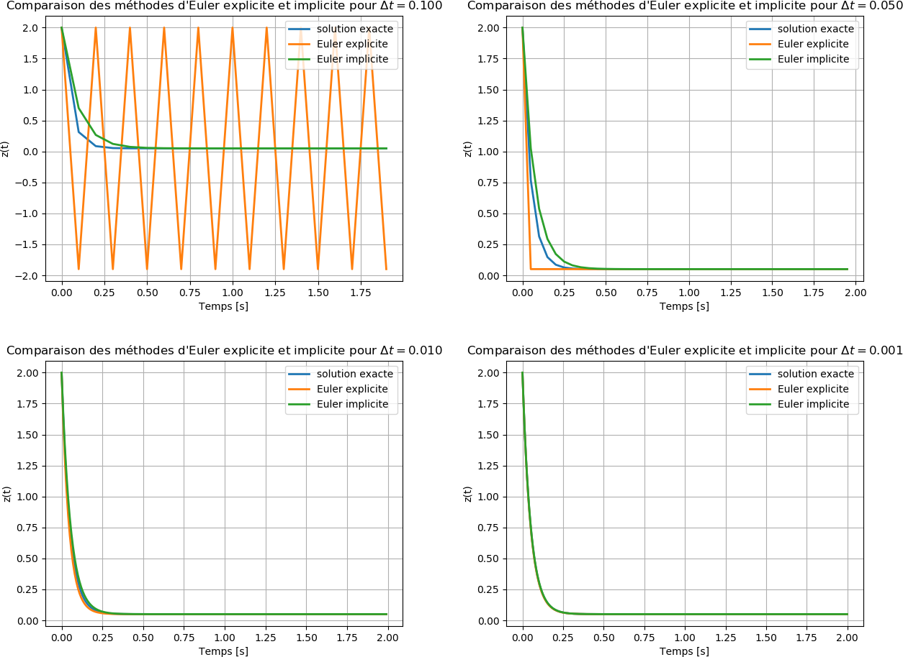
## NOM DU PROGRAMME: EulerEx2.py
#% IMPORTATION
import numpy as np
import matplotlib.pyplot as plt
#Question-a)
def sol_exacte(t, mu, z0):
return mu - (mu-z0)* np.exp(-t/mu)
mu = 1
z0 = [0, 1, 2]
dt = 0.05
t = np.arange(0, 2, dt)
plt.figure()
for zi in z0:
plt.plot(t, sol_exacte(t, mu, zi),lw = 2, label= "z0 = " + str(zi))
plt.title("Solution exacte pour mu = 1")
plt.xlabel("Temps [s]")
plt.ylabel("z(t)")
plt.legend()
plt.grid()
plt.savefig("Ex2_solexactemu1.png");plt.savefig("Ex2_solexactemu1.pdf")
plt.show()
#Question-b)
mu = 0.05
plt.figure()
for zi in z0:
plt.plot(t, sol_exacte(t, mu, zi), lw = 2, label= "z0 = " + str(zi))
plt.title("Solution exacte pour mu = 0.05")
plt.xlabel("Temps [s]")
plt.ylabel("z(t)")
plt.legend()
plt.grid()
plt.savefig("Ex2_solexactemu005.png");plt.savefig("Ex2_solexactemu005.pdf")
plt.show()
#Question-c) - EULER EXPLICITE
z0 = 2
N = len(t)
zexp =np.zeros(N)
zexp[0] = z0
for n in range(N-1):
zexp[n+1] = zexp[n] + dt*(1- zexp[n]/mu)
#Question-d) - EULER IMPLICITE
zimp =np.zeros(N)
zimp[0] = z0
for n in range(N-1):
zimp[n+1] = (zimp[n] + dt)/(1+ dt/mu)
#Question-e) - COMPARAISON
plt.figure()
plt.plot(t, sol_exacte(t, mu, z0), lw = 2, label= "solution exacte")
plt.plot(t, zexp, lw = 2, label= "Euler explicite")
plt.plot(t, zimp, lw = 2, label= "Euler implicite")
plt.xlabel("Temps [s]")
plt.ylabel("z(t)")
plt.legend()
plt.grid()
plt.show()
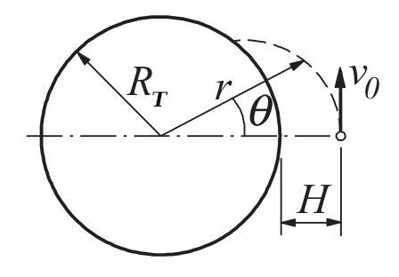
Un vaisseau spatial est lancé à l'altitude \( H = 772 \ km \) au-dessus du niveau de la mer avec la vitesse \( v_0 = 6700 \ m/s \) dans la direction indiquée sur la figure ci-dessus. Les équations différentielles décrivant le mouvement du vaisseau spatial sont: $$ \begin{align*} \ddot{r} &= r \dot{\theta}^2 - \frac{G M_T}{r^2} \\ \ddot{\theta} &= - \frac{2 \dot{r} \dot{\theta}}{r} \end{align*} $$ où \( r \) et \( \theta \) sont les coordonnées polaires du vaisseau spatial. Les constantes impliquées dans le mouvement sont:
Nous avons: $$ G M_T = (6.672 \times 10^{-11}) \ (5.9742 \times 10^{24}) = 3.9860 \times 10^{14} \ m^3/s^2 $$ Soit: $$ y = \left[\begin{array}{c} y_0 \\ y_1 \\ y_2 \\ y_3 \end{array}\right] = \left[\begin{array}{c} r \\ \dot{r} \\ \theta \\ \dot{\theta} \end{array}\right]$$ Les équations équivalentes du premier ordre deviennent: $$F(t, y) = \left[\begin{array}{c} \dot{y_0} \\ \dot{y_1} \\ \dot{y_2} \\ \dot{y_3} \end{array}\right] = \left[\begin{array}{c} y_1 \\ y_0 y_3^2 - 3.9860 \times 10^{14}/y_0^2 \\ y_3 \\ -2 y_1 y_3/y_0 \end{array}\right]$$ et les conditions initiales sont: $$ \begin{align*} r(0) &= R_T + H = (6378.14 + 772) \times 10^{3} = 7.15014 \times 10^{6} \ m \\ \dot{r}(0) &= 0 \\ \theta (0) &= 0 \\ \dot{\theta}(0) &= v_0/r(0) = (6700)/(7.15014 \times 10^6) = 0.937045 \times 10^{-3} \ rad/s \end{align*} $$ Ainsi, $$ y = \left[\begin{array}{c} 7.15014 \times 10^{6} \\ 0 \\ 0 \\ 0.937045 \times 10^{-3} \end{array}\right]$$
b) Utiliser la méthode Runge-Kutta du quatrième ordre (RK4) pour intégrer les équations depuis le lancement jusqu'à ce que le vaisseau spatial touche la terre. Déterminez \( \theta \) au site d'impact.
Le code Python est le suivant:
## NOM DU PROGRAMME: RK4Ex3.py
#% IMPORTATION
import numpy as np
import matplotlib.pyplot as plt
def RK4(F,t,y,h):
K0 = h*F(t,y)
K1 = h*F(t + h/2.0, y + K0/2.0)
K2 = h*F(t + h/2.0, y + K1/2.0)
K3 = h*F(t + h, y + K2)
return (K0 + 2.0*K1 + 2.0*K2 + K3)/6.0
def F(t,y):
F = np.zeros(4)
F[0] = y[1]
F[1] = y[0]*(y[3]**2) - 3.9860e14/(y[0]**2)
F[2] = y[3]
F[3] = -2.0*y[1]*y[3]/y[0]
return F
t = 0
tStop = 1200.0
h = 50.0
y = np.array([7.15014e6, 0.0, 0.0, 0.937045e-3])
T = []
Y = []
T.append(t)
Y.append(y)
while t < tStop:
y = y + RK4(F,t,y,h)
t = t + h
T.append(t)
Y.append(y)
T,Y = np.array(T),np.array(Y)
print("T Y[0] Y[1] Y[2] Y[3]")
for i in range(len(T)):
print(T[i], "{:2.4e}".format(Y[i,0]), "{:2.4e}".format(Y[i,1]),
"{:2.4e}".format(Y[i,2]), "{:2.4e}".format(Y[i,3]))
plt.figure(figsize=(8,5))
plt.plot(T, Y[:,0], '-o',lw = 2)
plt.xlabel("temps [s]")
plt.ylabel("r [m]")
plt.axhline(y=6.37814E6, color="k")
# plot point d'impact
plt.plot(1034.184,6.37814E6,'rX')
plt.savefig("Ex3RK4.png"); plt.savefig("Ex3RK4.pdf")
plt.show()
La sortie du programme est :
T Y[0] Y[1] Y[2] Y[3]
0.0 7.1501e+06 0.0000e+00 0.0000e+00 9.3704e-04
50.0 7.1482e+06 -7.5908e+01 4.6861e-02 9.3754e-04
100.0 7.1426e+06 -1.5173e+02 9.3771e-02 9.3904e-04
150.0 7.1331e+06 -2.2738e+02 1.4078e-01 9.4153e-04
200.0 7.1198e+06 -3.0276e+02 1.8794e-01 9.4504e-04
250.0 7.1028e+06 -3.7779e+02 2.3530e-01 9.4958e-04
300.0 7.0820e+06 -4.5236e+02 2.8292e-01 9.5515e-04
350.0 7.0576e+06 -5.2638e+02 3.3084e-01 9.6179e-04
400.0 7.0294e+06 -5.9973e+02 3.7911e-01 9.6951e-04
450.0 6.9976e+06 -6.7229e+02 4.2780e-01 9.7834e-04
500.0 6.9622e+06 -7.4393e+02 4.7697e-01 9.8832e-04
550.0 6.9232e+06 -8.1452e+02 5.2666e-01 9.9947e-04
600.0 6.8808e+06 -8.8389e+02 5.7693e-01 1.0118e-03
650.0 6.8349e+06 -9.5189e+02 6.2786e-01 1.0255e-03
700.0 6.7856e+06 -1.0183e+03 6.7950e-01 1.0404e-03
750.0 6.7331e+06 -1.0830e+03 7.3193e-01 1.0567e-03
800.0 6.6773e+06 -1.1456e+03 7.8520e-01 1.0744e-03
850.0 6.6185e+06 -1.2060e+03 8.3940e-01 1.0936e-03
900.0 6.5568e+06 -1.2639e+03 8.9459e-01 1.1143e-03
950.0 6.4922e+06 -1.3189e+03 9.5085e-01 1.1366e-03
1000.0 6.4250e+06 -1.3708e+03 1.0083e+00 1.1605e-03
1050.0 6.3552e+06 -1.4191e+03 1.0669e+00 1.1861e-03
1100.0 6.2831e+06 -1.4634e+03 1.1269e+00 1.2135e-03
1150.0 6.2089e+06 -1.5034e+03 1.1883e+00 1.2427e-03
1200.0 6.1329e+06 -1.5384e+03 1.2512e+00 1.2737e-03
Le vaisseau spatial frappe la terre lorsque r est égal à \( R_T = 6.37814 \times 10^6 \ m \). Cela se produit entre \( t = 1000 \) et \( 1050 \) s. Laissant \( 1000 + \Delta t \) être le moment de l'impact, nous pouvons écrire: $$r(1000 + \Delta t ) = R_T$$ En développant \( r \) dans une série Taylor à deux termes, nous obtenons: $$r(1000) + \dot{r}(1000) \Delta t = R_T$$ $$6.4250 \times 10^6 - 1.3708 \times 10^3 \Delta t = 6378.14 \times 10^3 $$ à partir duquel: $$\Delta t= 34.184 \ s$$
La coordonnée \( \theta \) du site d'impact peut être estimée de manière similaire.
En utilisant à nouveau deux termes de la série Taylor, nous avons: $$\theta (1000 + \Delta t ) = \theta (1000) + \dot{\theta} (1000) \Delta t = 1.0083 + 1.1605 \times 10^{-3} \times (34.184) = 1.0480 \ rad = 60.00^\circ$$
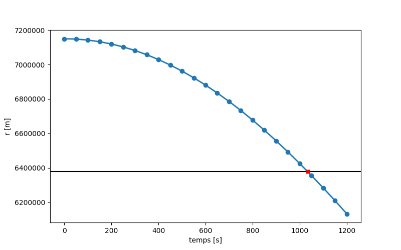